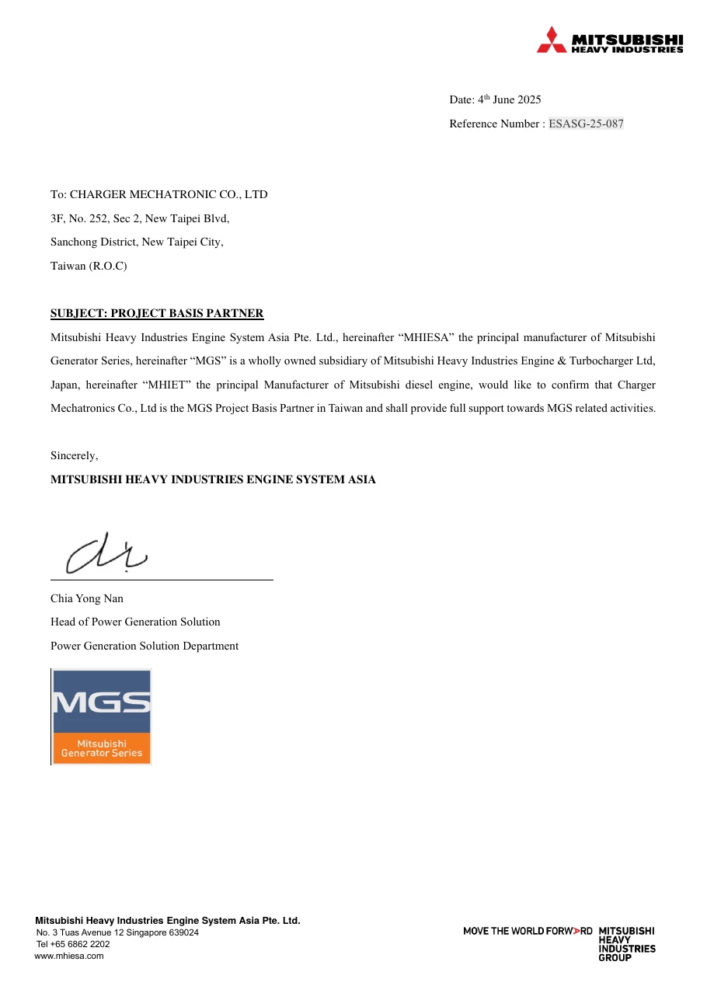

三菱重工發電機（MGS 系列）
甲子機電為三菱重工引擎系統亞洲公司（MHIESA）書面確認的 MGS（Mitsubishi Generator Series）台灣專案合作夥伴（Project Basis Partner）。越南的發電機專案洽詢由 CMV 受理。
原廠確認函
三菱重工引擎系統亞洲公司（Mitsubishi Heavy Industries Engine System Asia Pte. Ltd.，MHIESA）於 2025 年 6 月 4 日發函，確認 Charger Mechatronic Co., Ltd. 為 MGS 在台灣的 Project Basis Partner，並將對 MGS 相關業務提供全力支援。
- 發函單位
- Mitsubishi Heavy Industries Engine System Asia Pte. Ltd.（MHIESA），新加坡
- 日期
- 2025 年 6 月 4 日
- 文號
- ESASG-25-087
- 受文者
- Charger Mechatronic Co., Ltd.（甲子機電），台灣新北市
- 內容
- MGS Project Basis Partner（台灣）


點選確認函可開啟原尺寸。
我們提供的服務
- MGS 發電機組專案洽詢與規格確認
- 低壓配電盤與控制盤的設計製作
- 現場安裝、調試與技術服務
- 與廠內自動控制系統的整合
詢價時請提供
- 所需容量（kVA／kW）、電壓與頻率
- 用途：備用、常用或併聯
- 安裝地點與環境
- 預計時程
機型與規格依三菱重工原廠資料為準，於報價時提供。
直接打電話或用 Zalo 找 CMV 工程師
服務時間：週一至週六（越南時間）。可用越南文、中文、英文溝通。